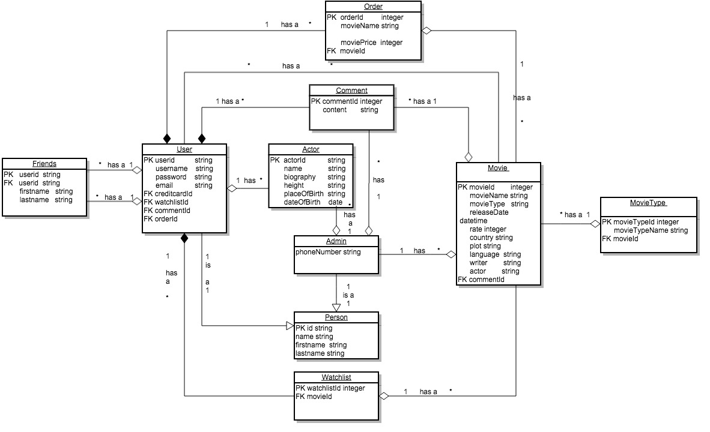

Author:
Xiao Tang tang.x@husky.neu.edu
Organizations: CS5610 Northeastern University
Creation Date: December 6, 2015
Project Description:
My website's name is Movie Journey. Movie Journey is a website based on the tendency that people feel strained and need a way to relax their minds. However, it's hard to decide which movie is deserved to watch. It is common to see that people abort the movie in middle way. It wastes people's time and often make people feel even worse. Movie Journey provide a platform, giving users a brief introduction of movie, making comments and rate about these movies, which helps people to find movies to their tastes in fast and convenient way. It also provide a search engine to help people find all movies and biographies of their favorite actors/actresses.
System Actors
User:
1. Create an account.
2. Modify personal information.
3. Search movies , add movies to watch list and delete movies from watch list.
4. Add movie to order, delete movies from order.
5. Pay for the movies in his/her order.
6. Make comments.
7. Add friends
8. Check my friend list to see who he/she is following and who he/she is followed.
9. Logout.
Guest:
1. Browse the website.
2. Search movies to see which movies are more popolar.
3. Search actors/actresses to know more information about your favorite actors/actresses
4. Browse the comments below movies to see what people think of this movie.
User Case Analysis
1. User creates an account
Description: the User fills in some details about self-information.
Precondition: Parents have a reliable email address.
Step by Step:
1. User -- visits the website and click the signup.
2. User -- fills in all the required information.
3. System -- checks the form and input values.
4. System -- if input validations failed, stays at page and notices the user.
5. User -- clicks the sign up button.
6. System -- stores the information in the database and notices the user successful register.
2. User Modify Personal Information
Description: the user modify some details about personal information.
Precondition: user has an account and login.
Step by Step:
1. User -- visits the website and enters the username and password to login.
2. User -- clicks the profile header to navigate to profile page.
3. User -- updates the information.
4. User -- clicks update.
5. System -- updates the information in the database and notices the user the successful updating.
3. User searches movies, adds movie to order to watch list, removes movie from order or watch list and checks out at order page.
Description: the user can search movies, adds/removes movies to/from watch list and add/removes movies to/from order.
Precondition: User has an account and logins.
Step by Step:
1. User -- signs in.
2. User -- clicks the header Movies to navigate to Movie page.
3. User -- inputs any movie title/ actor you want to search and clicks the button Search Movie/Search Actor.
4. System -- calls the outside API to search the movie/actor, if find the matched movie/actor, presents the details to user in the Movie Detail page, otherwise reminds the user there is no matched movie/actor.
5. User -- in the movie detail page, clicks the button Add to watch list to add the movie to watch list, then jump the watch list page. User can also clicks the button Add to order to add the movie to order.
6. System -- updates the watch list and order in the database.
7. User -- in the watchlist page, clicks the button Remove movie to remove the movie from watch list or clicks the button Add to order to add the movie to order, then jump to the order page.
8. System -- updates the watchlist and order in the database.
9. User -- in the order page, clicks the remove button from the order or you can check out here.
10. System -- Remembers the user you have successfully check out and update the order database
4. User makes comments about movie.
Description: the User can leave comments about movie if he/she would like to.
Precondition: User has an account and logins.
Step by Step:
1. User -- signs in.
2. User -- clicks the movie header to navigate to Movie page, inputs movie title which he/she wants to watch.
3. System -- calls the API to search the matched movies and presents the results.
4. User -- clicks the title or poster of the movie, then page changes to the movie detail.
5. User -- User can browse the comments below the movie poster and can also input some contents in the text area, then clicks the button Leave comments.
6. System -- posts the new comments below the movie and stores the new comments into database.
5. User can add friends.
Description: User can add other users to be his/her friends.
Precondition: User has an account and logins.
Step by Step:
1. User -- signs in.
2. User -- clicks header movie to navigate the Movie page.
3. User -- clicks any title or poster of movie you want to see, then navigate to the Movie detail page.
4. User -- can see all the comments of this movie and whose comments belongs to. User can click the button Check user profile to see his/her information. User also can click the button Add friends if he/she wants to make friends with him/her.
5. System -- navigates to the Friend page and stores the relationship between users into database and informs the user "add friends successfully".
6. User check his/her friend list.
Description: User can check his/her friend list to see who he/she is following and who he/she is followed by.
Precondition: User has an account and already logined.
Step by Step:
1. User-- signs in.
2. User-- clicks the header My friends, then navigate to the Friend page.
3. User-- can browse friends'' information he/she has.
4. User-- can remove any user he/she doesn't want to follow any more. Clicks the button remove friend to remove the according friend from his/her friend list.
5. System -- notifies the user remove action is successful and update the friends database accordingly.
7. User logs out
Description: If the user finishes all his operations, he can log out the website.
Precondition: User has an account and already logined.
Step by Step:
1. User -- clicks the sign in button.
2. User -- inputs the username and password and clicks the sign in button.
3. System -- notifies the user login successfully and replace the header Username with the current user name.
4. User -- can do what he/she likes after logined.
5. User -- clicks the header Logout.
6. System -- notifies the user logout successfully, restores the cur username to original header Username, then navigates to the home page.
Architecture Diagram:
UML:
